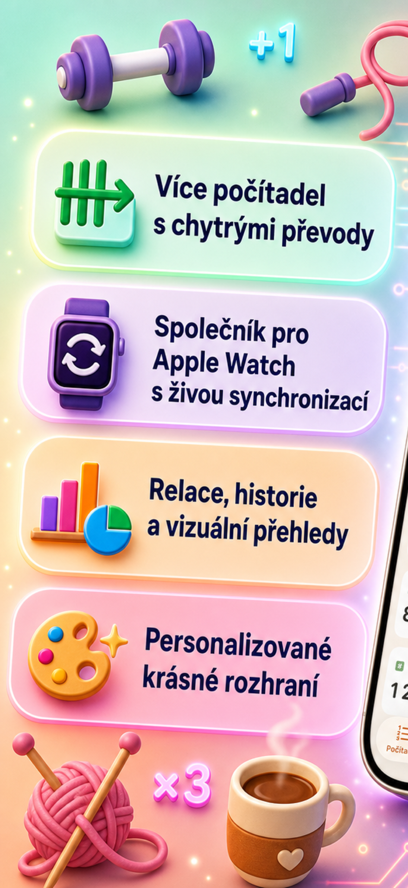
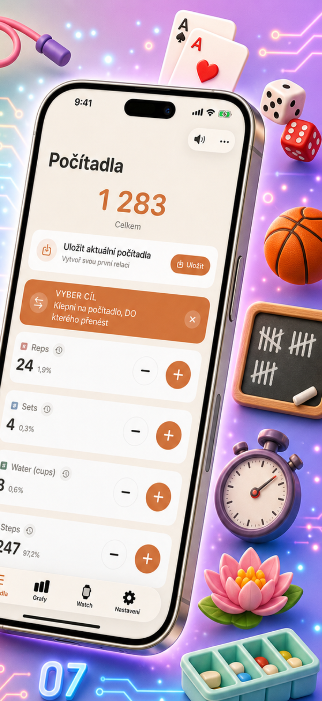
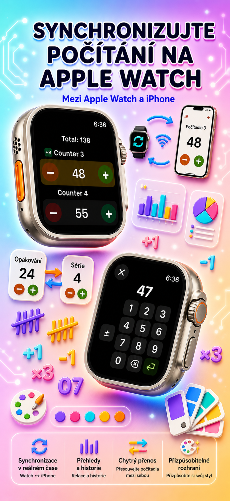
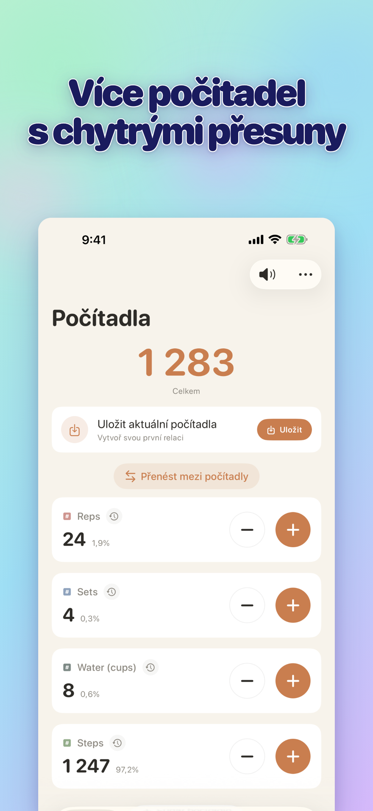
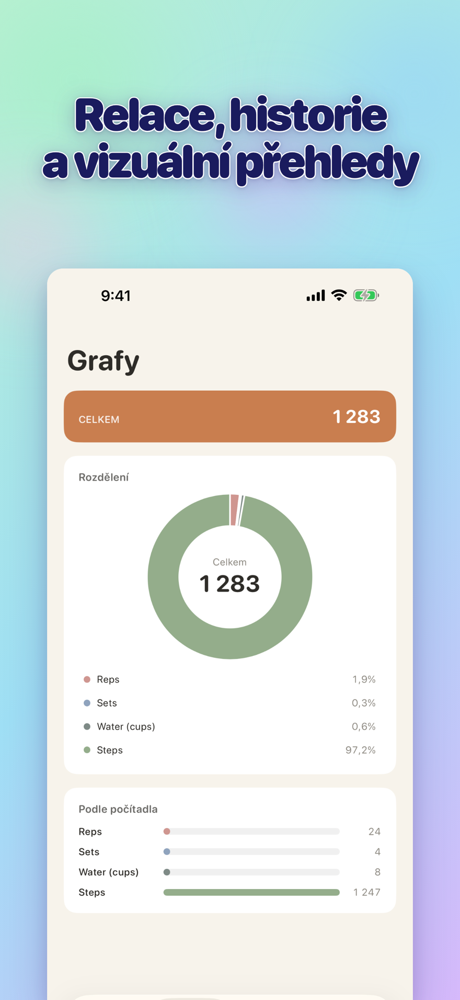

VLASTNÍ POČÍTADLA
- Vytvoř samostatná počítadla pro aktivity, hry, rutiny nebo seznamy
- Vlastní název a barva pro každé počítadlo
- Táhni a přeuspořádej
- Podrž pro rychlé počítání v řadě
- Plně offline — bez registrace, bez cloudu
Watch sync, klikr, skóre
Download on the App StorePočítadlo a klikr na trénink, růženec, pletení, inventuru, návyky i hry. Sync s Apple Watch, náhodný režim, grafy a seskupená historie.





Zásady ochrany osobních údajů: https://masawata.net/privacy-policy.html Podmínky použití: https://www.apple.com/legal/internet-services/itunes/dev/stdeula/
Download on the App Store